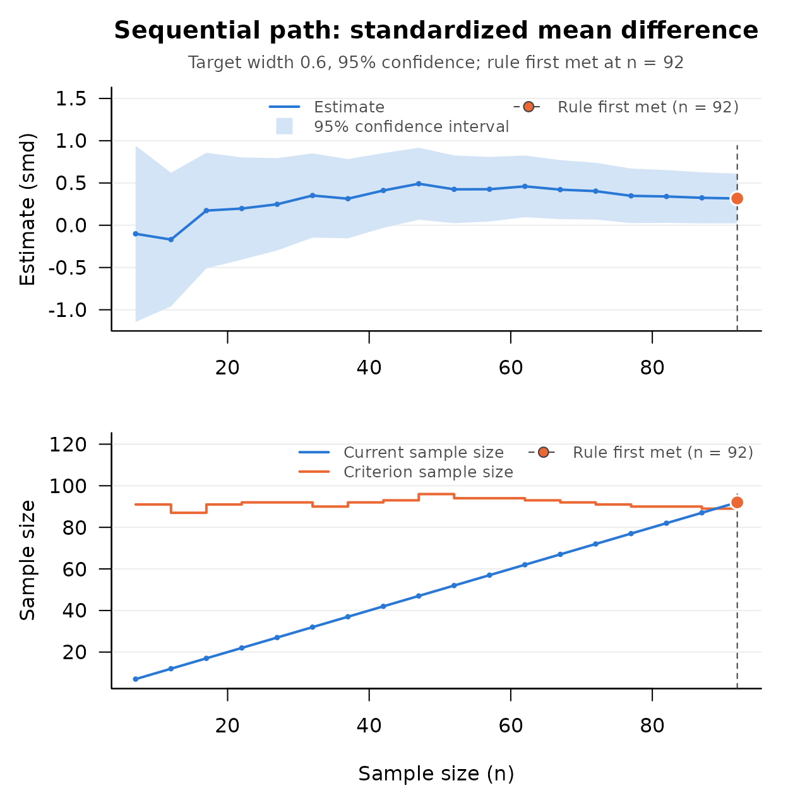

What the Package Is For
SMSD (“Sequential Methods for Study Design”) is for researchers who must decide how many participants to study and do not know the population values that a sample size formula asks for. A fixed sample size plan for an accurate estimate needs the effect size and the variances in advance. When those are guesses, the study ends with a confidence interval wider than intended, or with observations it did not need. A sequential procedure removes the guess: data are collected in stages, a stopping rule is checked on the data in hand after each stage, and sampling ends when the rule says the goal has been reached. The package implements such procedures for effect sizes used throughout psychology, education, management, marketing, and information systems, and for three kinds of goal:
- A narrow confidence interval (accuracy in parameter estimation, AIPE): stop when the confidence interval for the effect size is no wider than a width you choose.
- Minimum risk (minimum risk point estimation, MRPE): stop when the cost of sampling plus the cost of estimation error is as small as it can be.
- A budget: estimate a contrast among several groups as precisely as a fixed budget allows, when the groups cost different amounts to sample.
When the population values are known well enough to fix the sample
size in advance, the sibling package DMAR has the fixed sample size
planners (DMAR::ss_aipe_smd() and its relatives). SMSD is
for when they are not.
One Function to Start With
Start with seq_aipe_smd(), the check function for the
standardized mean difference between two groups. Every procedure in the
package has the same two parts. A pilot function (here
seq_aipe_smd_pilot()) returns the number of observations to
collect before the stopping rule is checked for the first time. A check
function (here seq_aipe_smd()) takes all the data collected
so far and reports whether the rule is met. Neither keeps any state or
prints anything; the researcher collects the data and calls the check
function again after each stage.
Suppose a training program is compared with a control condition on an engagement scale, and the aim is a 95% confidence interval for the standardized mean difference that is no wider than 0.60. Real data would come from participants; here two functions stand in for recruiting them. The simulated population has means of 4.9 and 4.5 and a standard deviation of 1 in both groups, so its standardized mean difference is 0.4.
set.seed(113)
new_trained <- function(n) rnorm(n, mean = 4.9, sd = 1)
new_control <- function(n) rnorm(n, mean = 4.5, sd = 1)
m <- seq_aipe_smd_pilot(width = 0.60)
m
#> [1] 7
trained <- new_trained(m)
control <- new_control(m)
out <- seq_aipe_smd(trained, control, width = 0.60)
out
#> Sequential check (standardized mean difference)
#>
#> Current n : 7
#> Criterion n : 91
#> Target width : 0.6
#> Confidence level: 95%
#> Coverage : asymptotic; assess with sensitivity analysis
#>
#> lower_limit : -1.143786
#> smd : -0.1011596
#> upper_limit : 0.9414664
#> xi_squared : 1.980884
#> criterion_n : 91
#> current_n : 7
#>
#> Stopping rule met: FALSEWith 7 participants per group the rule is not met: the criterion
sample size is 91 per group. The criterion is itself an estimate and
moves as data arrive, so the study does not simply collect that many. It
adds participants, here five per group at a time, and checks again until
attr(out, "is_satisfied") is TRUE.
while (!attr(out, "is_satisfied")) {
trained <- c(trained, new_trained(5))
control <- c(control, new_control(5))
out <- seq_aipe_smd(trained, control, width = 0.60)
}
out
#> Sequential check (standardized mean difference)
#>
#> Current n : 92
#> Criterion n : 89
#> Target width : 0.6
#> Confidence level: 95%
#> Coverage : asymptotic; assess with sensitivity analysis
#>
#> lower_limit : 0.02253833
#> smd : 0.3167723
#> upper_limit : 0.6110062
#> xi_squared : 2.073372
#> criterion_n : 89
#> current_n : 92
#>
#> Stopping rule met: TRUESampling stopped at 92 participants per group. The interval runs from 0.023 to 0.611, a width of 0.588, and contains the population value of 0.4. The width never exceeds the target once the rule is met; that part of the guarantee is exact. The coverage of the interval is an asymptotic property, discussed under Before Collecting Data.
The object returned is a data frame with columns term
and value, so any number in it can be taken out by name,
and the stopping decision is an attribute:
out$value[out$term == "smd"]
#> [1] 0.3167723
attr(out, "is_satisfied")
#> [1] TRUEThree Ways In
The example above is the first of the three goals: a narrow confidence interval. The other two are run the same way, with a pilot sample and a check after each stage.
Minimum Risk
Suppose instead that each participant costs 4 to recruit and assess,
and that an inaccurate estimate has a price as well: the researcher
would pay 2,000 to have the estimate within 0.5 of the population value,
so one unit of squared error is priced at A = 2,000 / 0.52 =
8,000 (the construction of Chattopadhyay & Kelley, 2017, p. 105).
seq_mr_smd() stops when the estimated total of the two
costs, the risk, is as small as it can be. The procedure targets a risk
and not an interval, so there is no confidence level.
set.seed(113)
m_mr <- seq_mr_smd_pilot(A = 8000, c = 4)
trained_mr <- new_trained(m_mr)
control_mr <- new_control(m_mr)
out_mr <- seq_mr_smd(trained_mr, control_mr, A = 8000, c = 4)
while (!attr(out_mr, "is_satisfied")) {
trained_mr <- c(trained_mr, new_trained(1))
control_mr <- c(control_mr, new_control(1))
out_mr <- seq_mr_smd(trained_mr, control_mr, A = 8000, c = 4)
}
out_mr
#> Sequential check (minimum risk point estimation (standardized mean difference))
#>
#> Current n : 100
#> Criterion n : 100
#>
#> smd : 0.2864474
#> risk : 723.2821
#> mean_1 : 4.906526
#> mean_2 : 4.594331
#> optimal_n1 : 50
#> optimal_n2 : 50
#> current_n1 : 50
#> current_n2 : 50
#> next_n1 : 50
#> next_n2 : 50
#>
#> Stopping rule met: TRUEThe pilot was 11 per group and sampling stopped at 50 per group. Had
the population value of 0.4 been known, the risk would have been
smallest at sqrt(8000 / (2 * 4)) * sqrt(2 + 0.4^2 / 4) =
45.2 per group (Chattopadhyay & Kelley, 2017, Equations 10 and 11).
The procedure had to estimate that number while it sampled, and the
correction term in its stopping rule makes it take somewhat more than
the optimum.
A Budget
Now suppose three training formats are compared, the new format
against the average of two existing ones, and an observation costs 38,
15, and 10 in the three groups. The study has 1,500 to spend.
seq_budget() (Chattopadhyay, Bandyopadhyay, Kelley, &
Padalunkal, 2025) reports whether sampling should continue, and
seq_budget_next() names the group that should receive the
next observation: the one furthest below its estimated optimal size,
which depends on its weight in the contrast, its variability, and its
cost.
set.seed(113)
weights <- c(1, -0.5, -0.5)
costs <- c(38, 15, 10)
new_score <- function(g, n) {
rnorm(n, mean = c(52, 50, 50)[g], sd = c(9, 6, 6)[g])
}
scores <- lapply(1:3, new_score, n = seq_budget_pilot(m_0 = 10))
repeat {
out_budget <- seq_budget(scores, weights, cost_per_group = costs,
budget = 1500)
g <- seq_budget_next(out_budget)
if (is.na(g)) break
scores[[g]] <- c(scores[[g]], new_score(g, 1))
}
out_budget
#> Sequential check (budget constrained K-population contrast)
#>
#> Current n : 65
#> Criterion n : 67
#> Confidence level: 95%
#>
#> lower_limit : -3.175372
#> contrast : 0.5710176
#> upper_limit : 4.317407
#> variance : 3.653673
#> current_total_n : 65
#> current_total_cost: 1499
#>
#> Stopping rule met: FALSE (sampling has ended: the budget is exhausted)
#>
#> Note: Sampling has ended because the budget cannot pay for another
#> observation: 1 of 1500 is left, and one more observation from a
#> group still below its criterion (groups 2 and 3) costs at least
#> 10.
attr(out_budget, "n_per_group")
#> [1] 28 13 24seq_budget_next() names only a group whose next
observation the remaining budget can pay for, so the total cost (1499
here) cannot pass the budget, and it returns NA once
sampling has ended, which is when
attr(out_budget, "is_satisfied") is TRUE.
Sampling ends when every group has reached its criterion or, as here and
nearly always, when what is left of the budget cannot pay for another
observation from a group that still needs one; the note under the result
says which, and so do the attributes rule_met (FALSE here)
and budget_exhausted (TRUE). The groups finished with 28,
13, and 24 observations. The population contrast is 52 minus the average
of 50 and 50, which is 2, and the interval contains it. The functions
decide_seq_budget_noninferiority() and
decide_seq_budget_equivalence() test the contrast against a
margin once sampling has ended; see
vignette("seq-budget", package = "SMSD").
The Whole Path, a Summary, and a Sentence
Three conveniences go with the check functions. They are shown here on the first example.
seq_path() applies a check function to data already in
hand at each successive sample size and returns every stage in one
object. All of the data go in its second argument, as a vector for one
sample or a named list for two groups or two variables. By default it
starts at the procedure’s pilot sample size and adds one observation at
a time; by = 5 reproduces the batches of the study above.
(The two stage procedures and seq_budget() have no path of
this kind, and seq_path() says so when given one.)
path <- seq_path(seq_aipe_smd, list(group_1 = trained, group_2 = control),
width = 0.60, by = 5)
path
#> Sequential path: standardized mean difference
#>
#> Stages checked : 18 (n = 7 to 92 by 5)
#> First check at : the pilot sample size
#> Target width : 0.6
#> Confidence level: 95%
#> Rule first met : n = 92
#> Estimate there : smd = 0.3167723 [0.02253833, 0.6110062]
#>
#> n estimate lower_limit upper_limit criterion_n is_satisfied
#> 7 -0.1011596 -1.14378553 0.9414664 91 FALSE
#> 12 -0.1693800 -0.95982746 0.6210675 87 FALSE
#> 17 0.1734452 -0.51004633 0.8569368 91 FALSE
#> ...
#> 82 0.3404268 0.02813196 0.6527217 90 FALSE
#> 87 0.3244108 0.02193399 0.6268876 89 FALSE
#> 92 0.3167723 0.02253833 0.6110062 89 TRUE
#>
#> The estimate to report is the one at n = 92.The plot() method draws the estimate with its confidence
interval narrowing toward the target, and the sample size against the
criterion.
plot(path)
summary() condenses any check, or the stopping stage of
a path, to one row; the columns shown here are a selection.
summary(path)[c("stop_n", "estimate", "lower_limit", "upper_limit",
"criterion_n", "stages")]
#> stop_n estimate lower_limit upper_limit criterion_n stages
#> 1 92 0.3167723 0.02253833 0.6110062 89 18generics::tidy() returns the estimate and its limits in
the column layout that DMAR uses, and as.data.frame()
returns the plain table.
generics::tidy(out)
#> term estimate ci_lower ci_upper conf_level
#> 1 smd 0.3167723 0.02253833 0.6110062 0.95seq_report() writes the paragraph a methods section
needs, from any check or from a path, and carries the full reference
with it.
seq_report(path)
#> Sample size was determined with the sequential accuracy in parameter
#> estimation procedure for the standardized mean difference (Kelley,
#> Darku, & Chattopadhyay, 2018), with a target full width of 0.6 for the
#> 95% confidence interval. The stopping rule was evaluated from the pilot
#> sample size (n = 7 per group) onward, after every 5 additional
#> observations per group, and was first met at n = 92 per group. At that
#> sample size the estimate of the standardized mean difference was 0.317,
#> 95% CI [0.023, 0.611]. The confidence level is asymptotic; meeting the
#> width target does not establish nominal coverage at this sample size.
#>
#> Reference
#> Kelley, K., Darku, F. B., & Chattopadhyay, B. (2018). Accuracy in
#> parameter estimation for a general class of effect sizes: A
#> sequential approach. Psychological Methods, 23(2), 226–243.
#> doi:10.1037/met0000127A path shows what the rule would have said at each sample size. The
estimate a sequential study reports is the one at the first sample size
at which the rule was met, and the observations must be in the order in
which they were collected; ?seq_path explains why.
What the Package Contains
| Quantity estimated | Goal | Check function | Source |
|---|---|---|---|
| Standardized mean difference | Narrow interval | seq_aipe_smd() |
Kelley, Darku, & Chattopadhyay (2018) |
| Coefficient of variation | Narrow interval | seq_aipe_cv() |
Kelley, Darku, & Chattopadhyay (2018) |
| Simple linear regression slope | Narrow interval | seq_aipe_reg_coef() |
Kelley, Darku, & Chattopadhyay (2018) |
| Standardized mean | Narrow interval | seq_aipe_sm() |
Kelley, Darku, & Chattopadhyay (2018) |
| Contrast of group means | Narrow interval | seq_aipe_c() |
Kelley, Darku, & Chattopadhyay (2018) |
| Gini index | Narrow interval | seq_aipe_gini() |
Chattopadhyay & De (2016) |
| Pearson, Kendall, or Spearman correlation | Narrow interval | seq_aipe_r() |
Kelley, Darku, & Chattopadhyay (2019) |
| Squared multiple correlation | Narrow interval | seq_aipe_R2() |
Kelley, Darku, & Chattopadhyay (2019) |
| Coefficient of variation | Minimum risk | seq_mr_cv() |
Chattopadhyay & Kelley (2016) |
| Standardized mean difference | Minimum risk | seq_mr_smd() |
Chattopadhyay & Kelley (2017) |
| Contrast across K groups with unequal costs | Budget | seq_budget() |
Chattopadhyay, Bandyopadhyay, Kelley, & Padalunkal (2025) |
| A mean, a location, or a median | Fixed width, minimum risk, bounded risk, or bounded length | The seq_fwd_*(), seq_br_*(), and
seq_blci_*() functions, the seq_mr_*()
functions for a mean, and the two stage ts_*()
functions |
Mukhopadhyay & de Silva (2009) |
All of the narrow interval procedures are distribution free except
the one for the squared multiple correlation, which Kelley, Darku, and
Chattopadhyay (2019, p. 503) develop for multivariate normal data only.
Each check function has a pilot function with _pilot added
to its name. The classical procedures in the last row are described in
vignette("special-cases-and-simulation", package = "SMSD").
Two distribution free minimum risk procedures for a mean that appeared
in development versions are held back for a later version, until they
have been checked against their source.
Many of these functions have a fixed sample size cousin in DMAR for
the case in which planning values are available
(ss_aipe_smd(), ss_aipe_r(),
ss_aipe_cv(), ss_aipe_reg_coef(),
ss_aipe_sm(), ss_aipe_c(), and
ss_aipe_R2()); each help page names its cousin.
Before Collecting Data
The narrow interval procedures deliver the width they were asked for by construction: once the stopping rule is met, the interval is no wider than the target. What the theory promises about the coverage of that interval, and about the risk of the minimum risk procedures, holds as the sample the rule asks for grows large. With a wide target, and for some effect sizes with a strong relationship, the rule can be met in a sample too small for that promise. How wide is too wide depends on the effect size, on the population value, and on the distribution of the data.
For a standardized mean difference of 0.5 the approximation is good
at widths of 0.4 and 0.2 for normal and for right skewed data
(?seq_aipe_smd) and at a width of 0.8 for normal data
(?seq_aipe_sensitivity); with right skewed data at 0.8 the
coverage is two to three hundredths short, as a run in
vignette("sensitivity-analysis", package = "SMSD") shows.
For a correlation, a regression slope, a coefficient of variation with
skewed data, and above all a squared multiple correlation with many
predictors, the approximation can be poor at targets that look
reasonable. In simulations of the procedures as shipped, with their
default settings, a 95% interval of width 0.4 contained a population
correlation of 0.4 in 0.78 of studies and a population slope of 0.5 in
0.83 with normal data, and a 95% interval of width 0.2 contained a
population coefficient of variation of 0.5 in 0.79 of studies with
lognormal data (?seq_aipe_sensitivity). A 95% interval of
width 0.30 contained a population squared multiple correlation of 0.50
in 0.361 of studies with 15 predictors (?seq_aipe_R2). Each
help page reports what was measured for its procedure and what helps: a
narrower target, a larger pilot sample, or both.
The classical procedures whose confidence level is asymptotic call
for the same care. The distribution free two stage interval for a mean,
with its default first stage of 30 observations and a narrow target,
covers a normal mean with probability 0.940 (the probability that a
t variable with 29 degrees of freedom falls between the two
normal quantiles of a 95% interval), and in simulations it contained the
population mean in 0.876 of studies with lognormal data, where 0.95 was
asked for (?ts_fwd_dfr_mean).
The remedy is to look before sampling. The
*_sensitivity() functions run a procedure from pilot to
stopping many times on simulated data with a known population value and
summarize the final sample size and the coverage or the risk. Every
narrow interval procedure has one (for the correlation it studies the
Pearson coefficient), and so do seq_mr_cv(),
seq_mr_smd(), and seq_budget(). For the study
of the first example, with a population value of 0.4, a target width of
0.60, and a check after every five participants per group:
sens <- seq_aipe_smd_sensitivity(true_value = 0.4, width = 0.60, G = 200,
seed = 113, batch = 5)
sens
#> term value
#> true_value 0.4
#> target_width 0.6
#> conf_level 0.95
#> replications 200
#> mean_n 90.075
#> median_n 92
#> sd_n 4.153992
#> mean_width 0.5904321
#> median_width 0.5918002
#> pct_width_within 100
#> coverage 0.925
#> pct_hit_max_n 0
#> pct_variance_unusable 0A study like the one above should expect to end with about 90
participants per group. The coverage row rests on only 200 replications,
used here to keep the vignette quick: its Monte Carlo standard error is
0.019, so 0.925 is not evidence of a shortfall. (In larger runs with
normal data and a population value of 0.5, coverage was 0.952 at a width
of 0.4, from 6,000 replications, and 0.95 at a width of 0.8;
?seq_aipe_smd and ?seq_aipe_sensitivity.) A
design that will be reported deserves 10,000 replications, which can
take from minutes to an hour or more at a narrow target, so time a call
with a small G first.
vignette("sensitivity-analysis", package = "SMSD") explains
each row.
One more thing can appear in a check. In a small sample the variance
estimate that a stopping rule needs can come out zero or negative. The
check then reports the rule as not met, with a note that says why, and
sampling continues;
vignette("seq-aipe-smd", package = "SMSD") shows what that
looks like.
Where to Go Next
-
vignette("step-by-step-sequential-workflow", package = "SMSD"): one study from plan to report, in detail. -
vignette("seq-aipe-smd", package = "SMSD")andvignette("seq-aipe-correlations", package = "SMSD"): the narrow interval procedures for the standardized mean difference, the correlation coefficients, and the squared multiple correlation. -
vignette("mrpe-cv", package = "SMSD")andvignette("mrpe-smd", package = "SMSD"): minimum risk point estimation. -
vignette("seq-budget", package = "SMSD"): the budget constrained procedure and its tests. -
vignette("sensitivity-analysis", package = "SMSD"): studying a design before collecting data. -
vignette("special-cases-and-simulation", package = "SMSD"): the classical procedures for a mean. -
vignette("complete-tour", package = "SMSD"): every method in one place.
References
Chattopadhyay, B., Bandyopadhyay, T., Kelley, K., & Padalunkal, J. J. (2025). A sequential approach for noninferiority or equivalence of a linear contrast under cost constraints. Psychological Methods, 30(2), 425–439. doi:10.1037/met0000570
Chattopadhyay, B., & De, S. K. (2016). Estimation of Gini index within pre-specified error bound. Econometrics, 4(3), 30. doi:10.3390/econometrics4030030
Chattopadhyay, B., & Kelley, K. (2016). Estimation of the coefficient of variation with minimum risk: A sequential method for minimizing sampling error and study cost. Multivariate Behavioral Research, 51(5), 627–648. doi:10.1080/00273171.2016.1203279
Chattopadhyay, B., & Kelley, K. (2017). Estimating the standardized mean difference with minimum risk: Maximizing accuracy and minimizing cost with sequential estimation. Psychological Methods, 22(1), 94–113. doi:10.1037/met0000089
Kelley, K., Darku, F. B., & Chattopadhyay, B. (2018). Accuracy in parameter estimation for a general class of effect sizes: A sequential approach. Psychological Methods, 23(2), 226–243. doi:10.1037/met0000127
Kelley, K., Darku, F. B., & Chattopadhyay, B. (2019). Sequential accuracy in parameter estimation for population correlation coefficients. Psychological Methods, 24(4), 492–515. doi:10.1037/met0000203
Mukhopadhyay, N., & de Silva, B. M. (2009). Sequential methods and their applications. Chapman & Hall/CRC. ISBN:9780367386535